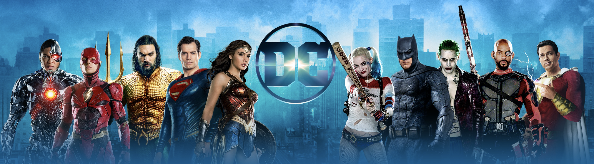

|  | |||||||||||
Các phim hot sắp ra của DC, nhất định bạn phải xem!!Sau một loạt thành công tước đó, năm 2022 này DC của chúng ta sẽ trình làng thêm những bộ phim mang đậm | |||||||||||
|
|
|
|||||||||
| Các bạn nhấp vào đây để tham gia fanzone DC ở Việt Nam nhé, hứa hẹn sẽ có nhiều điều hay đấy hihi | |||||||||||